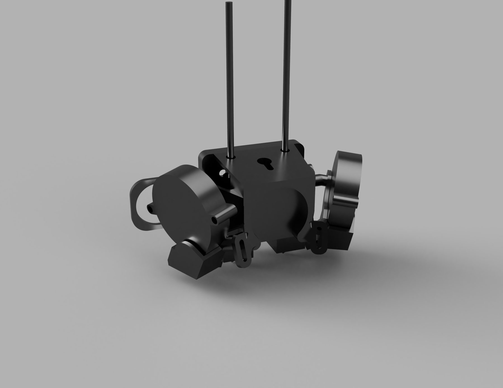
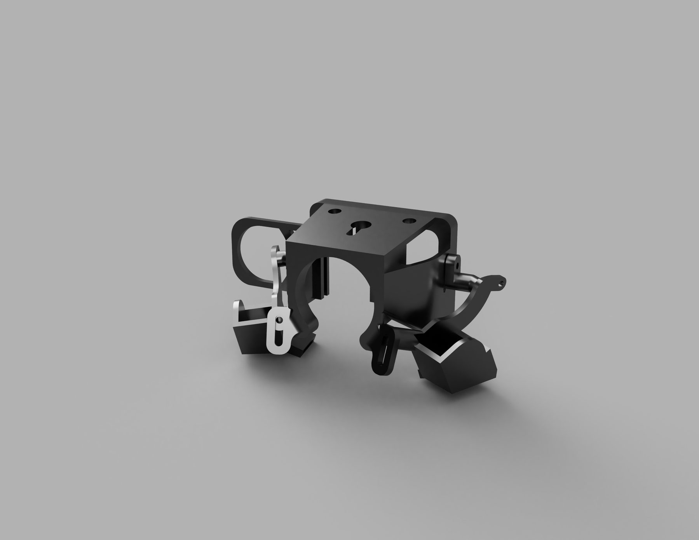
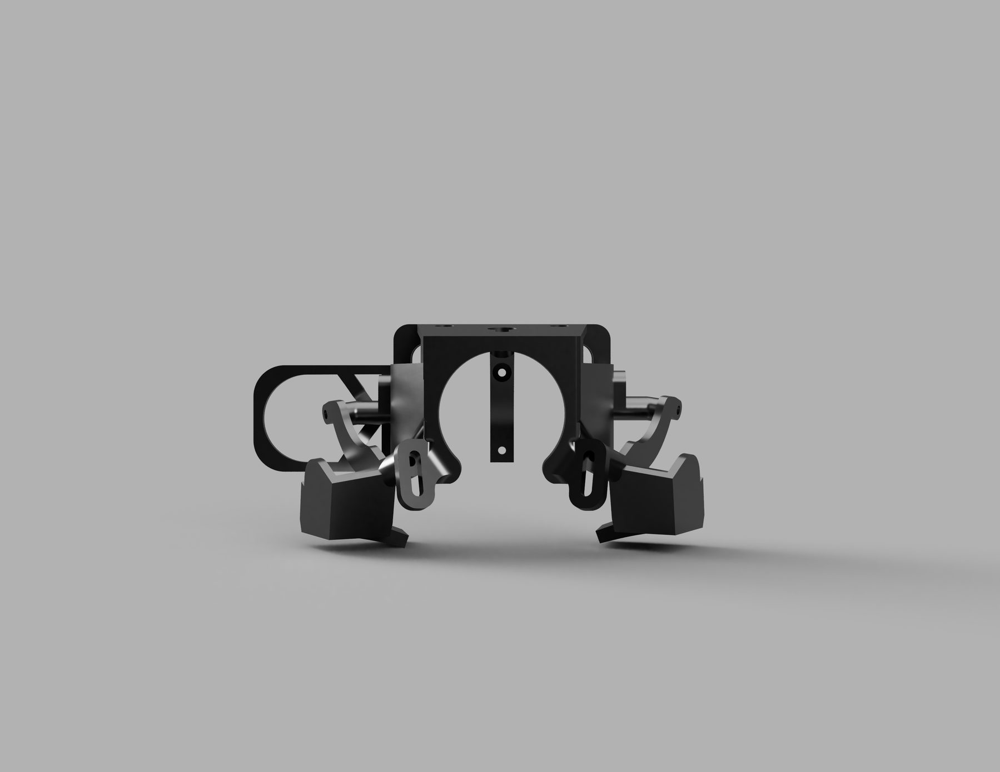

Retrofitted a custom dual-extrusion print head assembly for an Ender 3 Pro, using a custom manufactured sheet-metal backplate and modified firmware to enable multi-material 3D printing.
Upgraded the mainboard to support an additional stepper driver and hotend, and configured custom Marlin firmware to manage dual extrusion.
Designed a custom sheet-metal backplate to mount dual hotends within the volumetric constraints of the original gantry — learning manufacturing constraints and standards along the way to produce drawings for external manufacturing.
While the final assembly successfully printed multi-material and multi-color prints, the added complexity and inherent design significantly reduced the machine's reliability. It never functioned as well as I'd hoped — but it's the project that started my fascination with design trade-offs.

